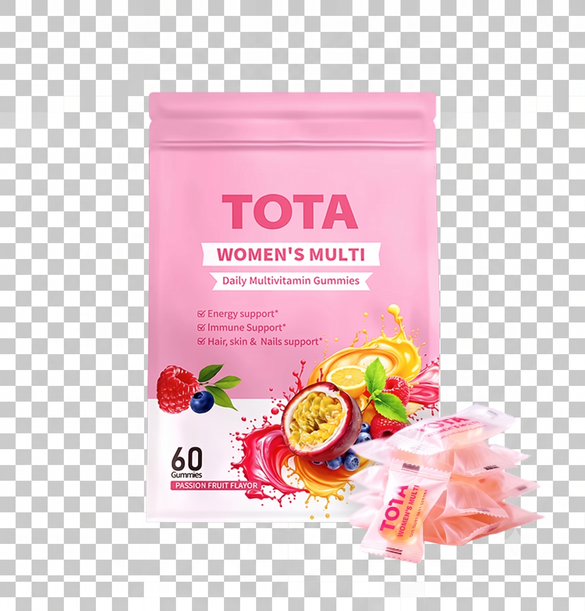

两大核心品类Two Core Lines
从关节养护，到日常营养From joint care to daily nutrition
 产品 01 · 关节养护Product 01 · Joint Care
产品 01 · 关节养护Product 01 · Joint Care
TOTA 氨糖软骨素TOTA Glucosamine Chondroitin
8大营养因数配方，特别添加姜黄与透明质酸钠，专为关节负荷较重的人群设计。An 8-in-1 formula with turmeric and sodium hyaluronate, designed for joints under everyday strain.
查看详情View details
产品 02 · 日常营养Product 02 · Daily NutritionTOTA 维生素软糖TOTA Women's Vitamin Gummies
21种营养素科学配方，涵盖抗氧化、B族维生素与女性专属成分，日常呵护更贴心。A multi-nutrient formula spanning antioxidants, B-vitamins and women-specific ingredients.
查看详情View details